长路线
28.4 米 · 60.0 秒 · 10.00 分 · 末段累计转角 26.0° · 终点距物体 1.15 米
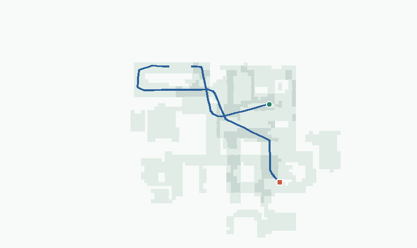
全量完成记录核对后，按“质量分低于 7 分、命中硬规则或抽帧画面可疑”筛除。图表只统计保留数据。
原始完成记录 922,435 条，其中 922,435 条视频可完整解码；另有 24 条采集失败记录不构成可评分轨迹。硬规则筛除 124,790 条，另有 1,223 条未命中硬规则但低于 7 分、16,562 条分数不低于 7 分但画面可疑；三组互斥，共筛除 142,575 条，保留 84.5%。下列质量分布、场景统计和动作统计均只以保留集为分母。
主要规则命中为：三帧最大连片近黑区 >10% 63,636 条、末段累计转向 >95° 54,317 条、抽帧低对比：核查近墙或纯色近景 20,185 条。同一条路线可命中多项，计数不可相加。抽看视频可见渲染缺口；深色家具也可能触发连片近黑门槛。本次采用严格筛选，存在误杀可能。
路线长度中位数 10.59 米，25 米及以上 59,534 条（7.6%）。终点距物体不超过 2 米的有 729,835 条（93.6%）；末段累计转角仍达到 60° 的有 97,808 条，已在样例中展示边界个例。路线平均速度中位数 0.44 米/秒，速度波动系数中位数 0.82；这些描述行驶风格，不单独作为删减依据。
每场景保留路线数中位数 336 条；6 个场景不足 10 条，28 个场景至少 5,000 条。场景间样本量不均衡，低覆盖场景应先看路线是否本来就少。在本批 NavMesh 上按 0.25 米网格和轨迹 0.5 米邻域计算，场景覆盖率中位数为 89.4%；已覆盖网格中被多条路线占用的比例中位数为 95.4%。筛后原已到达区域保留比例的中位数为 99.5%。每场景随机取 10% 路线时，等权平均覆盖 64.1%，全部路线为 85.6%；新增路线较多复用已走区域，不等于导航任务重复。筛选后，67 个场景的已到达区域保留不足 90%，其中 26 个原始路线不足 100 条；没有场景的轨迹点未映射比例超过 5%。保留集中有 22,632 对端点接近且廊道 IoU≥0.80 的近似重复候选，其中更严格的 IoU≥0.90 有 9,396 对；反向共享同一走廊的候选有 28,208 对。走廊多次经过很常见，空间重合率本身不作为删减条件。
同一条路线可命中多项，表中计数不可相加；这是筛选过程的计数，不进入下方保留集分布。
| 规则 | 口径 | 命中路线 |
|---|---|---|
| 质量分低于 7.00 | 同批次相对分，严格小于 7.00；可与其他规则重叠。 | 126,013 |
| 三帧最大连片近黑区 >10% | 首、中、末 64×36 抽帧的最大四连通近黑区域。暗墙或家具可能误中。 | 63,636 |
| 末段累计转向 >95° | 最后 2 秒或最后 1 米的累计转角超过 95°。 | 54,317 |
| 抽帧低对比：核查近墙或纯色近景 | 首、中、末三帧的最小亮度标准差 <7；纯色场景可能误中。 | 20,185 |
| 末段左右转向抵消 >10° | 末段取最后 2 秒或最后 1 米较长的窗口；左右转向抵消，平移不重置窗口。 | 17,791 |
| 末 5 秒视野外移动 ≥1 秒 | 移动速度 >0.05 m/s 时，相机光轴与行进方向夹角 >45° 的累计时间。 | 19 |
评分从 10 分起，按速度与朝向、末段动作、抽帧画面扣分；硬规则命中时最高 4.9 分。分数只用于同批比较，不等于成功概率，也不代表逐条人工复核。视频门禁对每段视频完整解码，并仅从首、中、末三帧计算画面代理；中间未抽到的局部瑕疵仍可能存在；目标物语义未逐条独立复标。
覆盖率以本批 NavMesh 为分母，按 0.25 米网格与轨迹 0.5 米邻域计算；它是按高度区分的网格面积估计，不是连续几何面积；叠图把不同楼层压在同一平面，不能据此判断是否穿墙。近似重复候选同时要求同类目标、起终点接近和廊道高度相似。
仅列原始完成路线不少于 100 条的场景；同一场景可能出现两次。筛除比例与已到达区域保留比例是筛选影响评估，不参与上面的保留集质量分布。
| 关注点 | 场景 | 保留／原始 | 筛除 | 已到达区域保留 |
|---|---|---|---|---|
| 筛除比例高 | W3J8ruZTQic | 142/1,072 | 86.8% | 96.7% |
| 筛除比例高 | F8Rw6EWpPRT | 49/139 | 64.7% | 67.6% |
| 筛除比例高 | cHumXFzhHUR | 233/624 | 62.7% | 96.4% |
| 筛除比例高 | WEDXu8bWRkq | 49/110 | 55.5% | 80.9% |
| 筛除比例高 | Wo6kuutE9i7 | 497/1,030 | 51.7% | 98.1% |
| 筛除比例高 | FxCkHAfgh7A | 119/242 | 50.8% | 82.2% |
| 筛除比例高 | UZ5rYGiwQgW | 101/203 | 50.2% | 92.0% |
| 筛除比例高 | kGVKV9k9DCT | 76/150 | 49.3% | 49.0% |
| 已到达区域损失较多 | yCCyNxubYcL | 87/110 | 20.9% | 46.9% |
| 已到达区域损失较多 | kGVKV9k9DCT | 76/150 | 49.3% | 49.0% |
| 已到达区域损失较多 | hDBqLgydy1n | 73/138 | 47.1% | 61.2% |
| 已到达区域损失较多 | b28CWbpQvor | 417/492 | 15.2% | 62.5% |
| 已到达区域损失较多 | F8Rw6EWpPRT | 49/139 | 64.7% | 67.6% |
| 已到达区域损失较多 | wz9FcGhrndc | 105/154 | 31.8% | 70.6% |
| 已到达区域损失较多 | KCvzhHEhdwB | 188/294 | 36.1% | 75.8% |
| 已到达区域损失较多 | k3ohRuM6bso | 112/180 | 37.8% | 78.5% |
| 场景 | 保留路线 | NavMesh 覆盖率 | 重复占用 | 近似重复对 |
|---|---|---|---|---|
| kQVPtf7ACRw | 2 | 8.8% | 0.0% | 0 |
| uXU4dVyyvWa | 4 | 18.6% | 35.0% | 0 |
| Nf3aGQTDAA1 | 7 | 23.4% | 57.6% | 0 |
| X7gTkoDHViv | 10 | 26.0% | 69.9% | 1 |
| 33ypawbKCQf | 9 | 28.6% | 55.3% | 0 |
| yCCyNxubYcL | 87 | 29.1% | 78.5% | 4 |
| YmEfzspXX5h | 70 | 33.2% | 79.1% | 1 |
| E64sjs3Dyfd | 47 | 34.9% | 76.0% | 1 |
| kGVKV9k9DCT | 76 | 35.2% | 71.4% | 2 |
| UQuchpekHRJ | 61 | 37.9% | 86.0% | 1 |
| XNoaAZwsWKk | 31 | 38.6% | 59.2% | 0 |
| ypcVfePF8TG | 28 | 39.3% | 70.0% | 0 |
| NwG7cpZnRZb | 7 | 41.4% | 53.3% | 0 |
| sjH1uaR68XQ | 32 | 41.8% | 92.1% | 0 |
| PYHRaSotJNh | 25 | 43.5% | 96.4% | 0 |
| GcfUJ79xCZc | 37 | 47.2% | 77.4% | 0 |
| b28CWbpQvor | 417 | 47.5% | 86.6% | 8 |
| XRHpoTZjtj7 | 68 | 48.7% | 89.3% | 1 |
| T48WJA2vtru | 54 | 48.8% | 81.3% | 0 |
| q9CAdKfvar2 | 40 | 49.0% | 94.3% | 3 |
| eWKqgQbVZow | 51 | 49.4% | 87.4% | 1 |
| wz9FcGhrndc | 105 | 49.5% | 83.8% | 0 |
| 66seV3BWPoX | 62 | 49.7% | 93.5% | 2 |
| QxfX5te1gFu | 17 | 49.7% | 67.7% | 1 |
| tL6i2PtktSh | 5 | 50.9% | 48.9% | 0 |
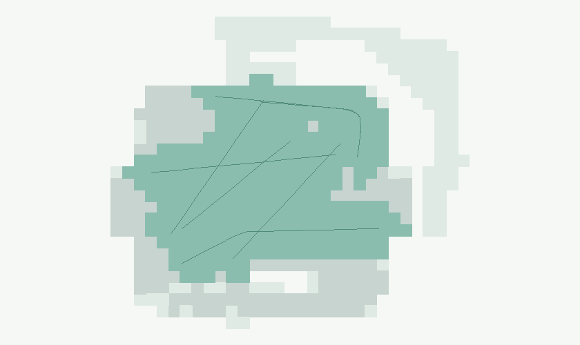
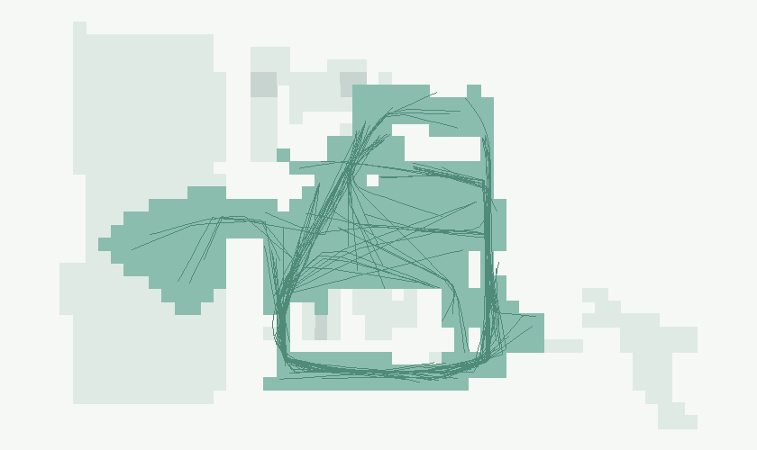
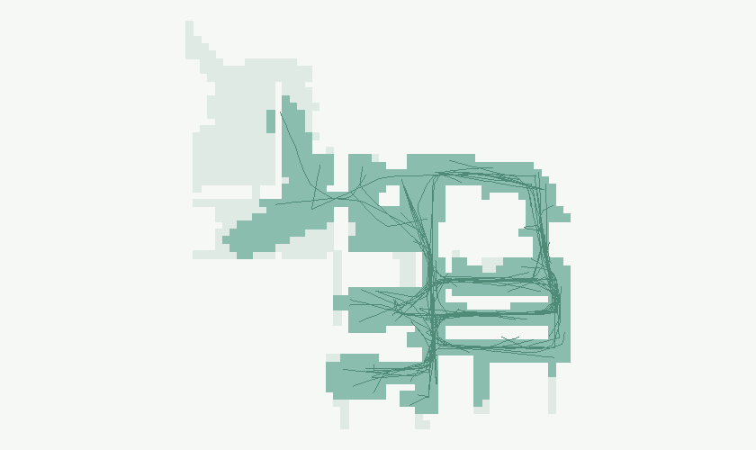
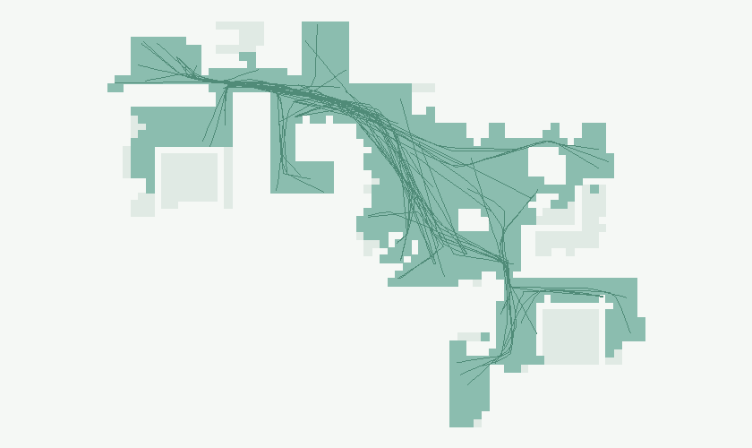
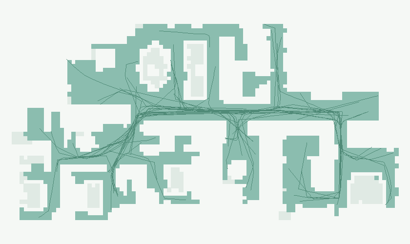
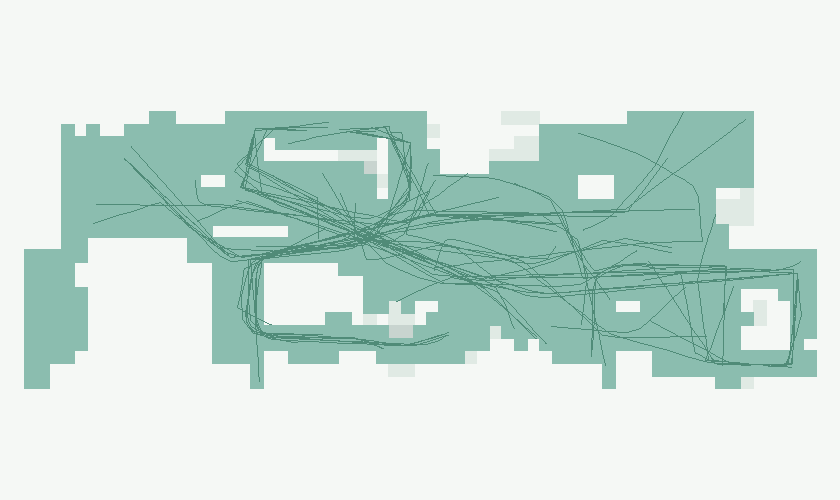
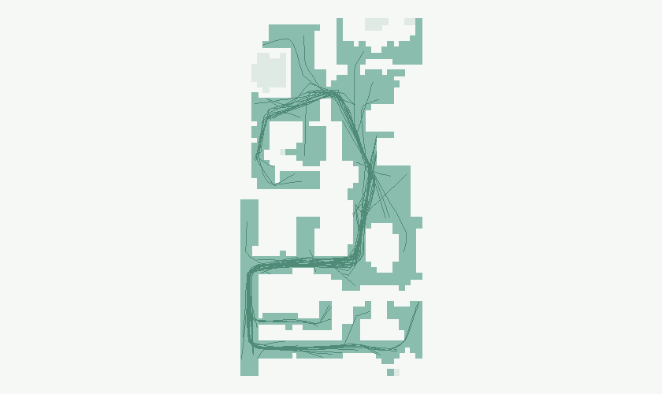
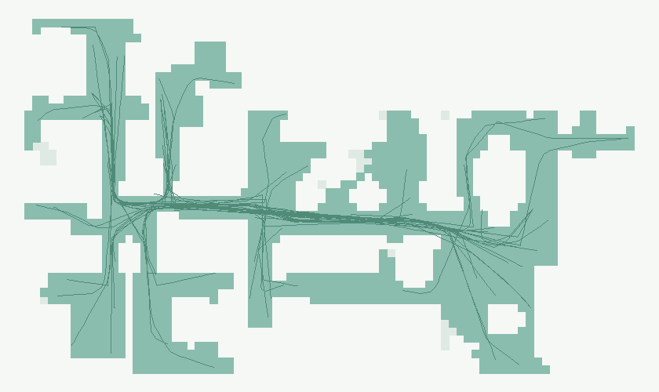
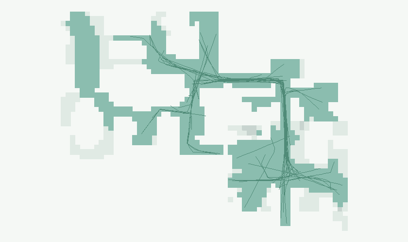
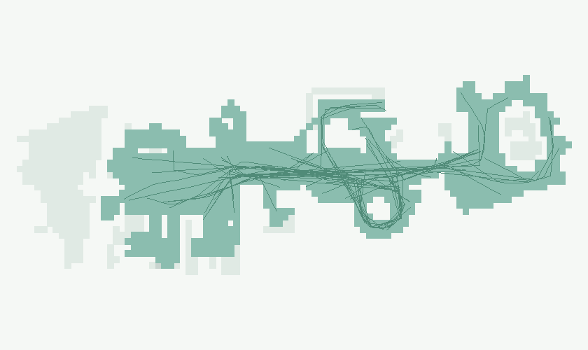
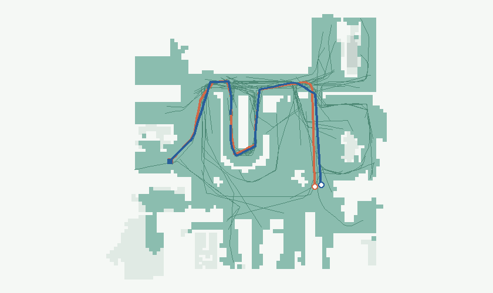
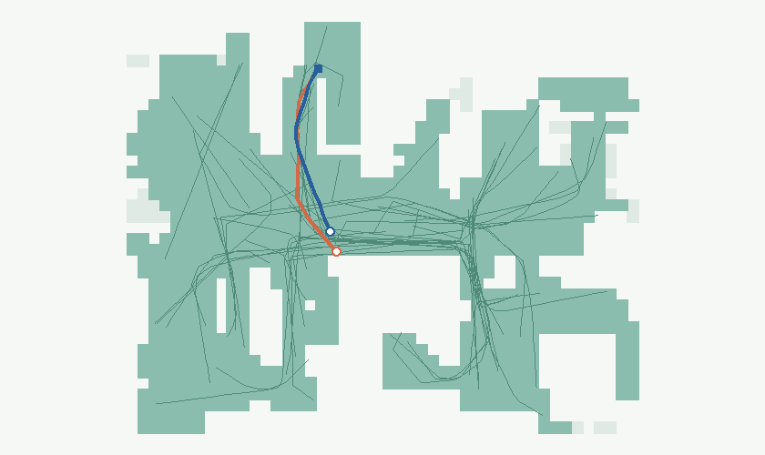
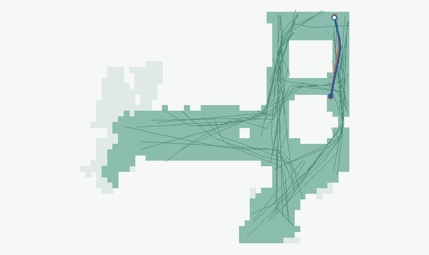
码本 K256，路线等权抽样，不分长度桶。运动 token 使用 256/256 种；STOP 占全部动作 1.8%，直行 42.9%，转弯 35.9%，原地转向 19.3%，低位移 0.0%。单步位置误差 P95 为 0.039 米，全路线终点位置误差 P95 为 1.271 米。25 米及以上路线的全程终点位置误差 P95 为 2.915 米。开环误差在参与拟合的保留集上计算，只衡量动作量化，不代表新场景泛化或闭环导航成功率。
| 重锚定窗口 | 路线 | 终点位置误差 P95 | 航向误差 P95 |
|---|---|---|---|
| 2 秒 | 779,860 | 0.028 米 | 1.13° |
| 4 秒 | 779,860 | 0.047 米 | 1.85° |
| 8 秒 | 779,860 | 0.093 米 | 2.60° |
| 16 秒 | 766,676 | 0.212 米 | 4.04° |
视频默认 4 倍速，可拖动进度条。地图使用本批 NavMesh，可走区域为浅绿，路线为细蓝线；绿圈是起点，红框是终点。多楼层压到同一平面时，跨层段不连线。
28.4 米 · 60.0 秒 · 10.00 分 · 末段累计转角 26.0° · 终点距物体 1.15 米

17.5 米 · 42.5 秒 · 7.00 分 · 末段累计转角 92.7° · 终点距物体 1.10 米
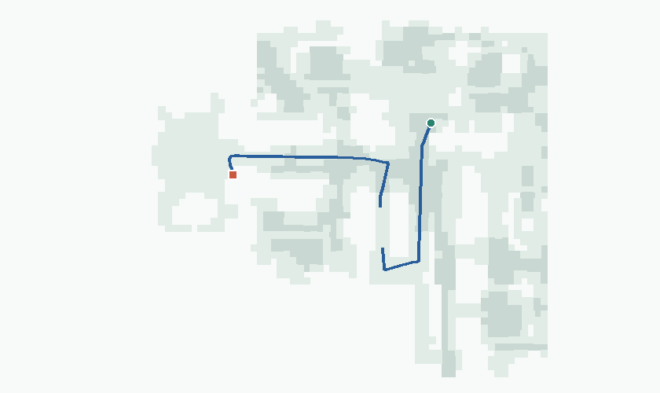
3.1 米 · 11.0 秒 · 8.23 分 · 末段累计转角 95.0° · 终点距物体 0.99 米
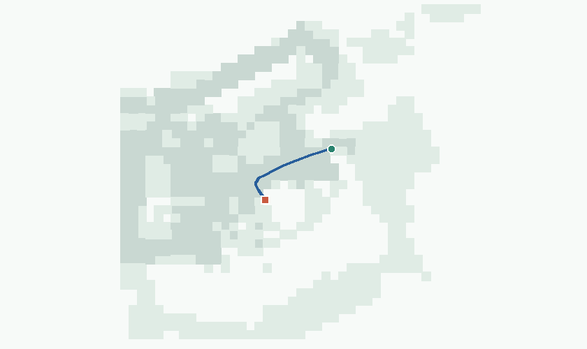
3.0 米 · 8.5 秒 · 7.74 分 · 末段累计转角 0.0° · 终点距物体 2.09 米
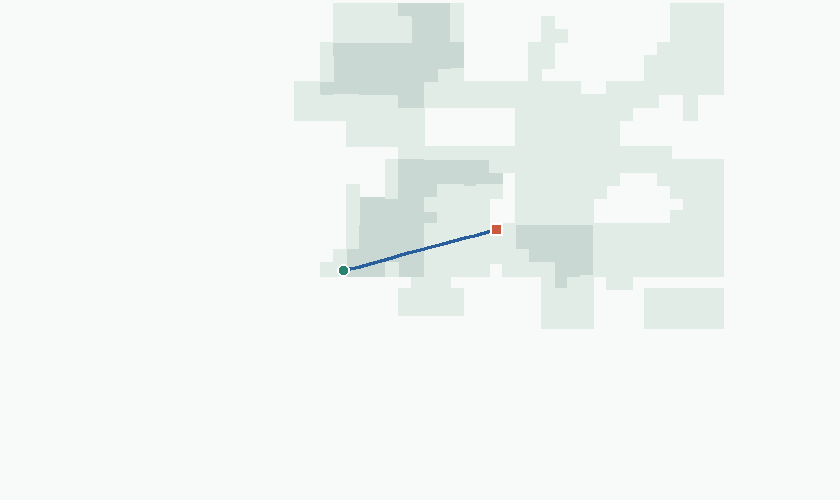
3.6 米 · 15.0 秒 · 9.25 分 · 末段累计转角 34.4° · 终点距物体 0.51 米
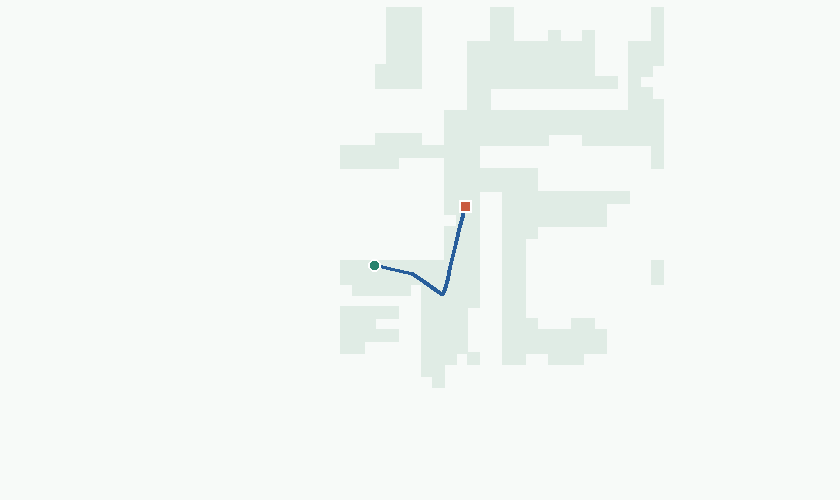
11.6 米 · 36.0 秒 · 7.79 分 · 末段累计转角 94.6° · 终点距物体 5.36 米
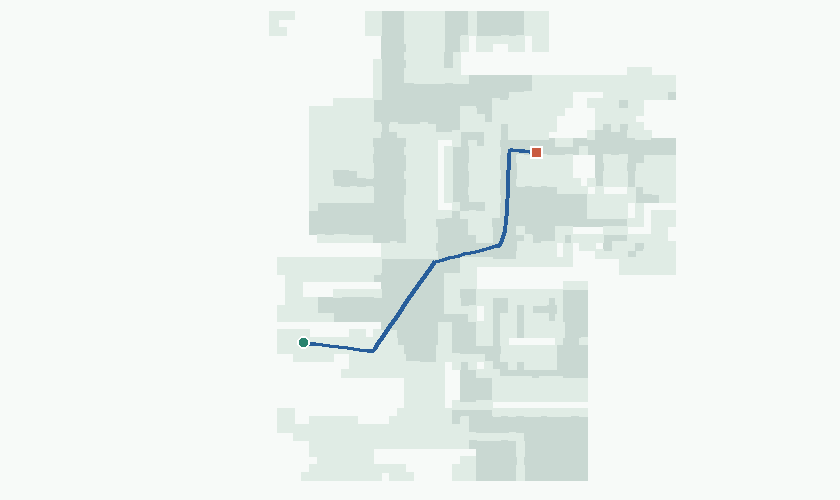
4.3 米 · 9.5 秒 · 10.00 分 · 末段累计转角 13.4° · 终点距物体 1.54 米
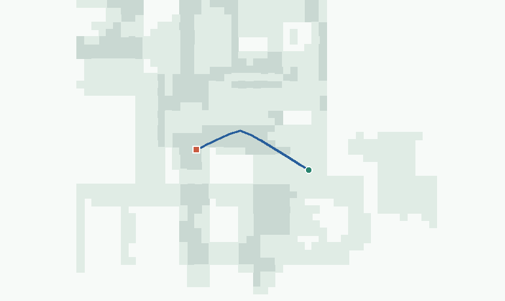
10.1 米 · 16.5 秒 · 10.00 分 · 末段累计转角 0.0° · 终点距物体 1.55 米
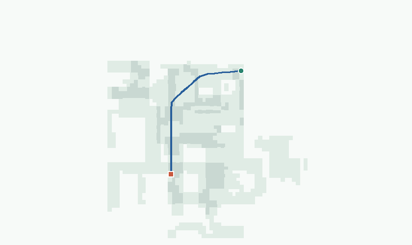